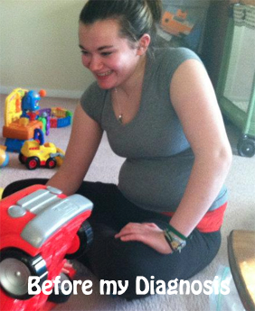
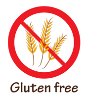

My Story
On average, it takes nine years before a person with Celiac Disease is officially diagnosed. I am lucky in that it only took me nine years to get a definitive diagnosis.
My first misdiagnosis was in seventh grade when I was told to eliminate lactose from my diet and see if I felt any better. I felt better when I eliminated lactose from my diet, but I did not feel great. I tried Lactaid pills (which help someone with lactose intolerance digest dairy) and found I had to take an increasing number of pills in order for them to help. Eventually I cut dairy out of my diet almost completely.
It wasn't until my freshman year of high school that I noticed more problems. I began experiencing psychological problems. This began with panic attacks and eventually led to a diagnosis of severe depression. At the time, this made sense. I was going through a lot of problems and stress at home and had perfectly valid reasons for feeling so down. I tried numerous medications with little improvement.
January 31, 2010 I had a severe panic attack that I honestly don't have much of a memory of. I recall being curled up in the corner of my bedroom crying and shaking uncontrollably. I couldn't breathe and was so afraid (of what I still don't know). I was brought to the hospital where I confessed that I had planned to take a sleeping medication in an attempt to kill myself two days later. I wanted to go to sleep and never wake up. I was tired of trying to fight my depression and felt hopeless, like I would never be happy again.
The doctors in the hospital put me on a mood stabilizer and an antidepressant. I was diagnosed with an "acute depressive mood disorder." I was finally feeling hopeful that I would some day be happy.
My senior year of high school I was very sick. Every two weeks or so I would be home with a "stomach flu." It had me so sick that I was almost brought to the ER for severe dehydration. My parents were convinced that this was a stomach flu that I just couldn't shake and although I was persistent in wanting to seek more help from a doctor, they disagreed.
I entered into my freshman year of college and felt the usual nervous emotions. I was nervous that I would have more emotional troubles, but I was determined to succeed.
I was still experiencing the "stomach flu" symptoms, but I kept pushing through it. Eventually I saw my doctor who gave me my second misdiagnosis of Irritable Bowel Syndrome (IBS). This was supposedly why I had gained over twenty pounds and felt ill all the time. My doctor and I decided that if I was still not feeling well after my finals in the Spring, we would continue looking into why I felt so sick.
Summer 2012 my boss at the company I worked for had Celiac Disease. After speaking with him and learning about the disease, I decided it was time for me to continue looking into why I felt so sick. I saw my doctor who agreed that I should be tested for gluten antibodies in my blood. I went gluten free that week and I haven't looked back!
Since going gluten free I have lost over twenty pounds, no longer have to take the mood stabilizing medication (although I still take the antidepressant), I no longer look or feel bloated, my skin has cleared up significantly, I've grewn half an inch and I'm happier than I've ever been!
I'm gluten free because I have to be and I wouldn't have it any other way!